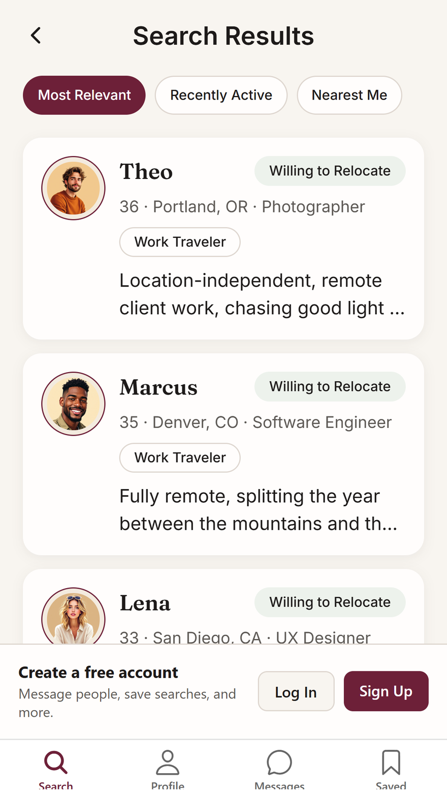
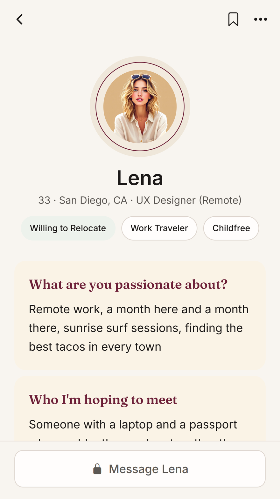
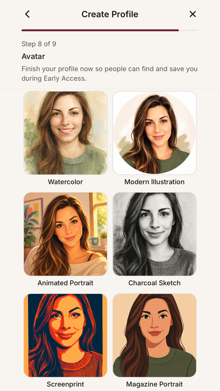

Most dating apps only show who's near you this week. Find Your Person lets you search the whole U.S. for people who share your location-independent lifestyle and your love of travel.
We're currently in Early Access. Create your profile and explore matches nationwide. Messaging will open as soon as the community is ready.
Become one of our first 100 Founding Members
Create your profile, then enter promo code NOMAD when the app asks at the end, or anytime in Settings → Redeem a Promo Code, to receive free Premium through one year after messaging opens, along with exclusive Founding Member benefits.
NOMAD
Have a referral code from a friend? Use theirs instead to receive the same benefits. How it works

About
When home is wherever your laptop is, dating apps built around who's nearby don't fit. You meet someone great, then one of you moves on. What you really want is someone who wants the same kind of life: flexible, curious, and always ready for the next trip.
Find Your Person lets you search nationwide by values, interests, and lifestyle, so you can look for people who work remotely, love to travel, and want to explore together.
No swiping. You decide who to search for, based on what matters to you.
Search Ideas
Type the words that matter to you, then narrow it down with categories and filters. A few searches to try:
Someone who works remotely and loves to travel
Someone into slow travel, new cities, and spontaneous trips
Someone who wants a life of freedom and adventure, without kids
Search matches the words people write in their profiles, plus categories and filters. Results depend on who has joined, and we're in Early Access and still growing.
How It Works
Type what matters to you — lifestyle, goals, interests, or relationship preferences — then layer on filters for the basics. Search real profile words instead of waiting for an algorithm to decide who you see.

App screens shown with illustrative demo profiles.
Search nationwide instead of only the city you're in this month. Someone who shares your location-independent life could be anywhere in the U.S.
Every profile shows whether they'd consider moving for the right person. If either person is open to it, the match works — making nationwide search realistic, not theoretical.
Your public profile shows a stylized avatar — not the selfie you upload to create it. Your selfie is never shown to other users.

Who It's For
FAQ
Free to download. Free to search.
Early Access: Create your profile and explore the founding community now. Messaging will open as soon as the community is ready.
Become one of our first 100 Founding Members
Create your profile, then enter promo code NOMAD when the app asks at the end, or anytime in Settings → Redeem a Promo Code, to receive free Premium through one year after messaging opens, along with exclusive Founding Member benefits.
NOMAD
Have a referral code from a friend? Use theirs instead to receive the same benefits. How it works
Find Your Person is for adults 18 and older. By downloading, you confirm you meet the age requirement.